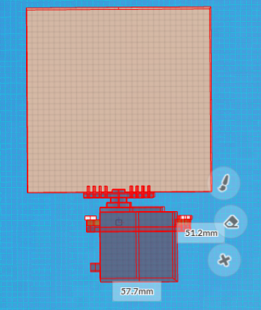
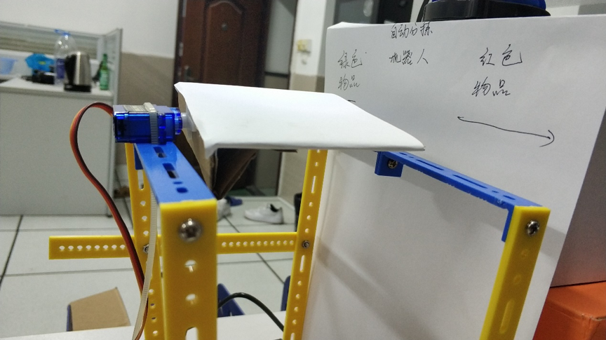
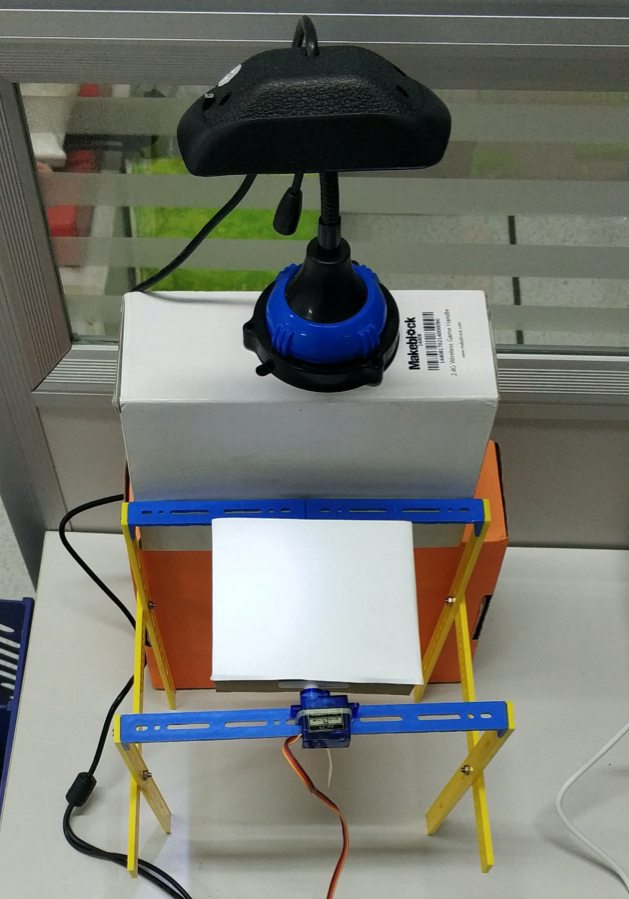

10. 根据颜色智能分拣的机器人¶
案例提供：郑祥、林淼焱（温州）
生活中总会遇到分类的小物品，比如：家里混在一起的各类瓜子、学校里混在一起不同颜色的卡片纸条、创客空间里散落在地上的螺丝和螺帽、生活中产生的不同垃圾。
人工智能已经是现在非常热门的话题了，也为我们的物品分类分拣提供了很不错的解决思路。下面将以不同颜色（红色和绿色）的纸条的分拣为例，简单介绍一下智能分拣机器人的制作。

10.2. 原型设计¶
智能分拣机器人的分拣平台原型设计如图所示。

当待分拣物在待分拣平台上时，虚谷号通过平台正上方的摄像头采集待分拣物（卡片）的图像，并分析该待分拣物的颜色；若虚谷号判断该待分拣的颜色属性是红色，则执行舵机向右侧旋转90度；反之，若虚谷号判断为绿色，则执行舵机向左侧旋转90度；进而完成分拣物品的功能。
因此，除了笔记本电脑、无线网络WIFI外，智能分拣机器人的制作还需要以下清单：
10.3. 实践制作¶
结构搭建¶
步骤1：根据设计的原型，利用机器人结构件、螺丝、纸板、舵机搭建分拣平台，如图所示。
步骤2：将摄像头置于分拣平台的正上方，并调整好焦距。
步骤3：将摄像头（USB接口）、舵机连接到虚谷号上，最终效果如图所示。
编写程序¶
通过U盘方式正确设置WIFI账号和密码后，将虚谷号和笔记本电脑同时连上WIFI热点，打开浏览器访问虚谷号内置的Jupyter，即可完成对虚谷号进行编程。
导入基本库，并做好应用摄像头的准备工作。
import cv2
from xugu import Servo #从 xugu 库中导入 Servo 类
from matplotlib import pyplot as plt
import time
def get_showcampic(fname):
cap = cv2.VideoCapture(0) # 打开摄像头
ret, frame = cap.read() # 读摄像头
display.clear_output(wait=True) # 设置在一个画面中刷新
cv2.imwrite(fname,frame)
plt.imshow(frame[:,:,::-1])
plt.axis('off') #不显示坐标
plt.show()
cap.release()
cv2.destroyAllWindows()
def get_color(frame):
step=0
red=0
blue=0
green=0
print('开始处理')
high, width, _ = frame.shape
print('剪裁前行数%d，列数%d' % (high, width)) # 裁剪坐标为[x0:x1,y0:y1],截取图像的中心部分
frame=frame[int(high*4/10):int(high*6/10),int(width*4/10):int(width*6/10)]
high, width, _ = frame.shape
print('剪裁后行数%d，列数%d' % (high, width))
#读取图片中所有像素点的RGB值
frame1 = cv2.cvtColor(frame, cv2.COLOR_BGR2RGB)
for i in frame1:
#i中的数据类型是一整行的像素点[[0,0,0][0,0,0]]
step+=1
#读取图片像素点的步长，step==50则为50个像素点读取一次
if (step==20):
for point in i:
#point中的数据类型是单个像素点
red+=point[0]
green+=point[1]
blue+=point[2]
times=0
red=red/len(i)
green=green/len(i)
blue=blue/len(i)
return red,green,blue
while 1:
servo=Servo(4)
servo.write_angle(90)
filename = r"test.jpg"
get_showcampic(filename)
frame = cv2.imread(filename)
r,g,b=get_color(frame)
if (g>r):
print("更有可能是绿色物品")
servo.write_angle(0)
time.sleep(1)
servo.write_angle(90)
time.sleep(1)
else:
print("更有可能是红色物品")
servo.write_angle(180)
time.sleep(1)
servo.write_angle(90)
time.sleep(1)
print('r:',r)
print('g:',g)
print('b:',b)
time.sleep(5)
10.4. 功能测试¶
依次将不同颜色的红绿纸条放在待分拣平台上，红绿纸条分别被分拣到右边和左边的小盒子中，如图所示。虚谷号可以正确判断纸条的颜色，并且驱动舵机转向不同的方向。

本案例涉及到的所有代码，已经整合在虚谷号的固件中。
10.5. 项目总结¶
智能分拣机器人的完成，可以让红绿颜色纸条的分拣变得轻松而简单。当然，生活中除了纸条以外，还有很多东西需要被分拣，例如：创客空间里的螺丝和螺帽，不同垃圾的分类。这些都可以通过虚谷号、摄像头结合一些简单的分拣结构就能完成，一起尝试思考一下：如何用虚谷号和摄像头做一个智能垃圾分类装置吧？